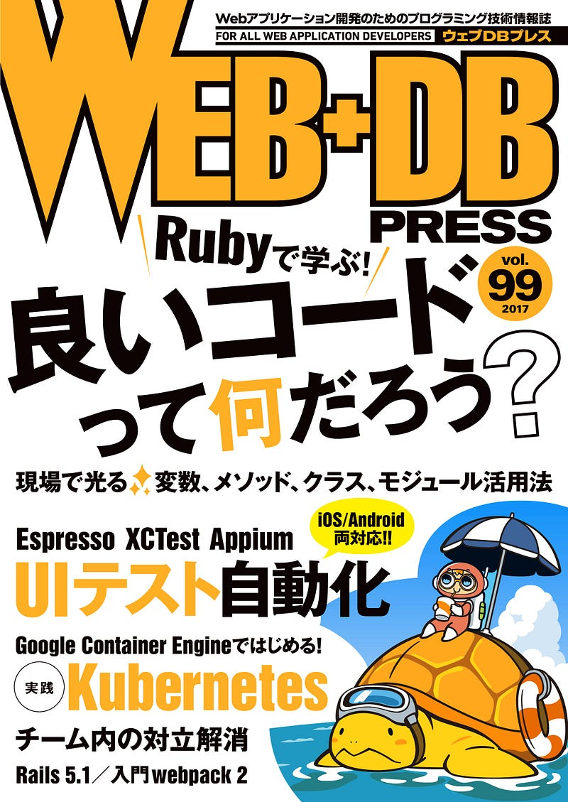

WEB+DB PRESS vol. 99でKubernetes/GKEの記事を書きました。
WEB+DB PRESS vol. 99でKubernetes/GKEの記事を書きました。
私がbuildersconのためにKubernetes/GKEを触り初めて2年ほどが経ちました。buildersconのサイトは全てGKE上で動いております。
そんなところから今回WEB+DB PRESS vol.99 に寄稿させていただきました。
Amazonで髙橋 健一, 谷口 禎英, 井本 大登, 山崎 勝平, 大和田 純, 内村 元樹, 坂東 昌哉, 平田 敏之, 牧 大輔, 板敷 康洋, 大﨑 浩崇, 穴井 宏幸, 原口 宗悟, 久田 真寛, ふしはらかん, のざき ひろ…amzn.to
builderscon tokyo 2017チケット、販売終了まであとわずか！
ちなみにrebuild.fm #185 でbuilderscon tokyo 2017 (8月3日前夜祭、8月4日＋8月5日が本編）がスポンサーをさせてもらいました。ぼちぼちチケット販売終了しますので、チケットを買うなら今！ですよ！今！
(Please see below for English instructions)builderscon は技術分野を限定しない、「知らなかった、を聞く」をテーマにした、全ての... powered by Peatix : More…builderscon-tokyo-2017.peatix.com
Kazuho Okui さんをゲストに迎えて、WWDC, Xcode, Swift, 通知、HomePod などについて話しました。rebuild.fm
私とコンテナ
Dockerが流行り始めて比較的すぐに僕はそれを使い始めましたが、今ではコンテナを使うものにとっては当たり前とも言えるコンテナオーケストレーションという部分が足りていなくて一体どうデプロイすればいいのか悩んだものでした。
Dockerのすぐ後に登場した fig はその部分を助けてくれるはずのものでした。
Fast, isolated development environments using Docker.www.fig.sh
はずでした、というのは、私はこれで色々痛い目に遭ったからです。
実はYAPC::Asia Tokyo 2015のサイトは全てコンテナで動いていて、その管理（？）にはfigが使われていたんですよね。やー、あれはコンテナの可能性を感じたけど、スケールする予感が全くしてなかった。辛かった。
世界最大のYAPCが最後の大花火をぶちあげに今年ももどってきました！YAPCはYet Another Perl Conferenceの略で、Perlに関するカンファレンス・・・いや、お祭りです！Perlだけに限らず、様々な分野のギーク達…yapcasia.org
Kubernetesとの出会い
そこからしばらくもうコンテナは使わないかなーと思っていた私ですが、色々あってKuberenetesに出会いました。
でもね。すぐ「あ！これだ！」とはならなかったのです。
後々KubernetesがGoogleのBorgまわりの経験知をベースにしていたこととかを知って納得はしたのですが、実際Kubernetesを使い始めようとすると、Kubernetes内で使われている用語とそのコンセプトを理解してからでないとドキュメントが意味不明なのです。
そのコンセプトというのも、マルチクラウド対応のために抽象化されていてわかるような、わからないような、微妙な感じだったので余計混乱した思い出があります。
そんなわけで、最初苦労はしましたが、使ってみたら「あ、これだ！俺が求めてたのはまさにコレ！」というユーフォリアを経験したので、それ以来ずっと使い続けています。
そんな中他の人にもKubernetesを使って欲しい！と思っていたものの、実際これを理解するの、面倒だよなー、強制できないよなーって思っていたこともあり、持ち込みしたのが今回 WEB+DB PRESS vol 99に書かせてもらったKuberenetes企画です。

今回の記事の狙い
今回の記事では編集の稲尾さんに時々たしなめられながら、「絶対コンセプト・用語をまとめて見られるリソースを作るべき！」と頑固に主張し、なんと5章からなる特集なのに3章目までは歴史的背景とコンセプト・用語解説のみを書きました。
「Podってなに？」「Serviceってなに？」「Deploymentってなに？」というあたりをちゃんと理解しない限りどのドキュメントを読んでもふんわりしかわからないし、これらのコンセプトはお互いに依存していたりオーバーラップする機能があったり罠になりそうな部分がたくさんあるのです。なので、これらをひとつにまとめた資料にこそ価値があると思いました。
ちなみに筆者は以前からその手のスライドを公開していましたが、やはりプレゼン用の資料なので情報量が少なすぎでした。
なお、本家のドキュメントでもそのことは認識してるっぽく、この数ヶ月前くらいに「コンセプト」というセクションが新たに追加されていました。
それでもやはりこのドキュメント分かりづらい。僕も今回記事を書くにあたって何回もこっちのドキュメントに飛んだりあっちのドキュメントに飛んだりを繰り返しました。
というわけで書いたのが今回の記事です。KubernetesおよびGoogle Cloud Platformで提供されているManaged KubernetesサービスであるGoogle Container Engine (GKE)を使ってKubernetesについて解説しています。
WEB+DB PRESS vol. 99は6/24発売です。もし読んでいただけたら、是非 #wdpress とタグをつけて感想をあげてくれると嬉しいです！
なおこの特集があったのでGo連載のほうは休載です！8月号には載るはず！